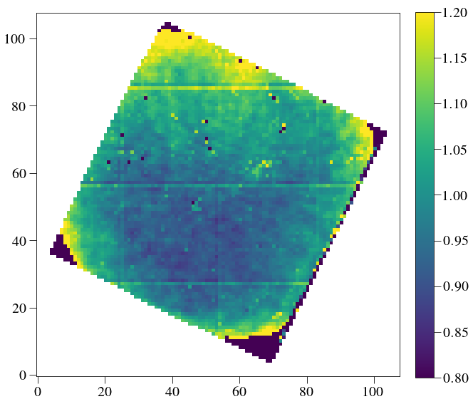

PISCES wavelength calibration¶
We have PISCES VARIA calibration sets. We will show how to process them to build a new wavelength calibration
In [1]:
import numpy as np
import glob
from astropy.io import fits
%pylab inline --no-import-all
plt.rc('font', family='serif', serif='Times',size=20)
plt.rc('text', usetex=True)
plt.rc('xtick', labelsize=20)
plt.rc('xtick.major', size=10)
plt.rc('ytick.major', size=10)
plt.rc('ytick', labelsize=20)
plt.rc('axes', labelsize=20)
plt.rc('figure',titlesize=20)
plt.rc('image',origin='lower',interpolation='nearest')
import sys
import os
Populating the interactive namespace from numpy and matplotlib
Construct lenslet bad pixel/flatfield from broadband reduced cube¶
The following only works if the reduced cube is first done WITHOUT already correcting for lenslet flatfield. To do this, run the but only AFTER running deleting the keywords in the parameters class:
In [3]:
from crispy.IFS import reduceIFSMap
if hasattr(par,'lenslet_flat'): del par.lenslet_flat
if hasattr(par,'lenslet_mask'): del par.lenslet_mask
cube = reduceIFSMap(par,par.codeRoot+"/Inputs/BB.fits",method='lstsq',smoothbad=False)
# cubeOpt = reduceIFSMap(par,par.codeRoot+"/Inputs/BB.fits",method='optext',smoothbad=False)
crispy - INFO - Read data from HDU 1 of ..//Inputs/BB.fits
crispy - INFO - Reduced cube will have 11 wavelength bins
crispy - INFO - Writing data to ..//SimResults/BB_red_lstsq_resid.fits
crispy - INFO - Writing data to ..//SimResults/BB_red_lstsq_model.fits
crispy - INFO - Elapsed time: 4.119495s
In [7]:
from crispy.tools.imgtools import gen_lenslet_flat
BBcube = Image(par.exportDir+"/BB_red_lstsq.fits")
lenslet_flat,lenslet_mask = gen_lenslet_flat(BBcube)
Image(data = lenslet_flat).write(par.exportDir+"/lenslet_flat.fits",clobber=True)
Image(data = lenslet_mask).write(par.exportDir+"/lenslet_mask.fits",clobber=True)
plt.figure(figsize=(10,10))
plt.imshow(lenslet_flat*lenslet_mask, cmap='viridis',vmin=0.8,vmax=1.2)
plt.colorbar(fraction=0.046, pad=0.04)
plt.show()
crispy - INFO - Read data from HDU 1 of ..//SimResults/BB_red_lstsq.fits
crispy - INFO - Read inverse variance from HDU 2 of ..//SimResults/BB_red_lstsq.fits
('Mean, sig in central 20 lenslets:', 4521.3896, 244.69797)
crispy - INFO - Writing data to ..//SimResults/lenslet_flat.fits
crispy - INFO - Writing data to ..//SimResults/lenslet_mask.fits

In [13]:
psflets = Image(par.wavecalDir+"/hires_psflets_lam715.fits").data
fig, axarr = plt.subplots(4,4,figsize=(12,12))
for i in range(psflets.shape[0]):
for j in range(psflets.shape[1]):
axarr[i,j].imshow(psflets[i,j],vmin=0.0)
axarr[i,j].axis('off')
plt.subplots_adjust(wspace=0.0,hspace=0.05)
plt.savefig(par.wavecalDir+"psflets.png")
plt.show()
crispy - INFO - Read data from HDU 0 of ..//ReferenceFiles/Calibra_170425//hires_psflets_lam715.fits

Scratch work with the PSF width determination¶
In [ ]:
import re
# par.wavecalDir = '../ReferenceFiles/wavecalR50_660/'
hires_list = np.sort(glob.glob(par.wavecalDir + '/hires_psflets_lam???.fits'))
hires_arrs = [fits.open(filename)[0].data for filename in hires_list]
lam_hires = [int(re.sub('.*lam', '', re.sub('.fits', '', filename)))
for filename in hires_list]
psflet_res = 3 # Oversampling of high-resolution PSFlet images
In [ ]:
print lam_hires
print hires_arrs[0].shape
print par.wavecalDir
In [ ]:
shape = hires_arrs[0].shape
sigarr = np.zeros((len(hires_list), shape[0], shape[1]))
_x = np.arange(shape[2])/float(psflet_res)
_x -= _x[_x.shape[0]//2]
for i in range(sigarr.shape[0]):
for j in range(sigarr.shape[1]):
for k in range(sigarr.shape[2]):
# for i in range(1):
# for j in range(1):
# for k in range(1):
row = np.sum(hires_arrs[i][j, k, :, shape[3]//2-1:shape[3]//2+1],axis=1)
# row = np.sum(row.reshape((row.shape[0]//3,3)),axis=1)/3.
# xrow = np.sum(_x.reshape((_x.shape[0]//3,3)),axis=1)/3.
sigarr[i, j, k] = np.sum(row*_x**2)
sigarr[i, j, k] /= np.sum(row)
sigarr[i] = np.sqrt(sigarr[i])
In [ ]:
from crispy.tools.detutils import frebin
#row = np.sum(hires_arrs[i][j, k, :, shape[3]//2-1:shape[3]//2+1],axis=1)
#print _x.shape
#sh= np.sum(row.reshape((row.shape[0]//3,3)),axis=1)/3.
#xsh = np.sum(_x.reshape((_x.shape[0]//3,3)),axis=1)/3.
#print sh.shape
# plt.plot(xrow,row)
plt.plot(_x,row)
plt.plot(_x,np.exp(-_x**2/2./sigarr[i, j, k]**2)/np.sqrt(sigarr[i, j, k])/np.sqrt(2.*np.pi)/0.6)
In [ ]:
print sigarr[i, j, k]
In [ ]:
from crispy.tools.locate_psflets import PSFLets
lam = np.loadtxt(par.wavecalDir + "lamsol.dat")[:, 0]
allcoef = np.loadtxt(par.wavecalDir + "lamsol.dat")[:, 1:]
psftool = PSFLets()
lam1 = min(lam)
lam2 = max(lam)
psftool.genpixsol(par,lam, allcoef, order=3,lam1=lam1/1.02, lam2=lam2*1.02)
In [ ]:
from scipy import ndimage,interpolate
from scipy import interpolate
mean_x = psftool.xindx[:, :, psftool.xindx.shape[-1]//2]
mean_y = psftool.yindx[:, :, psftool.yindx.shape[-1]//2]
longsigarr = np.zeros((len(lam_hires), mean_x.shape[0], mean_x.shape[1]))
ix = mean_x*hires_arrs[0].shape[1]/par.npix - 0.5
iy = mean_y*hires_arrs[0].shape[0]/par.npix - 0.5
for i in range(sigarr.shape[0]):
longsigarr[i] = ndimage.map_coordinates(sigarr[i], [iy, ix], order=3, mode='nearest')
fullsigarr = np.ones((psftool.xindx.shape))
for i in range(mean_x.shape[0]):
for j in range(mean_x.shape[1]):
if psftool.good[i,j]:
fit = interpolate.interp1d(np.asarray(lam_hires), longsigarr[:, i, j],
bounds_error=False, fill_value='extrapolate')
fullsigarr[i, j] = fit(psftool.lam_indx[i, j])
In [ ]:
plt.imshow(fullsigarr[:,:,10])
plt.colorbar()
In [10]:
from crispy.tools.reduction import _add_row
polychromeR = fits.open(par.wavecalDir + 'polychromeR%d.fits' % (par.R))
psflets = polychromeR[0].data
print psflets.shape
psflets2 = _add_row(psflets,n=1)
print psflets2.shape
print psflets2[-1:].shape
(11, 1032, 1056)
(12, 1032, 1056)
(1, 1032, 1056)
If you are satisfied with the flatfielding and masking, move the two fits files into the wavecal directory and reduce things with the two class attributes defined. When you reload the parameter file, the two attributes automatically get reset.